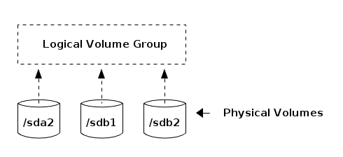
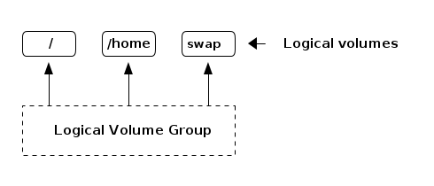

LVM - Logical Volume Manager
Table of Contents
NOTE: This is a work in progress. Expect changes and updates.
These notes provide a terse, high level overview of what LVM offers. It defines the components involved and briefly discusses why it is useful.
Introduction
LVM is a tool for managing logical volumes, which are block devices abstracted on top of physical disks. This abstraction give you much more flexibility than accessing your physical hard disks directly. For example, you can resize logical volumes, mirror them, stripe them, allocate more of them, etc..
LVM provides these services through the device mapper, a framework in the Linux kernel for mapping block devices to virtual block devices.
Components of LVM
Physical Volume
Physical volumes are the hard disks and their partitions that you build the logical volume abstraction on top of. Ultimately, when you write or read to logical volumes, the operations will be mapped to these physical volumes.
Logical Volume Groups
You can think of a logical volume group as a pool of storage made collectively out of the physical volumes. The logical volumes you create will be allocated storage space from this pool. If a logical volume group has free space that has not been allocated to logical volumes, you can have some flexibility in resizing logical volumes later.
NOTE: /boot cannot be on a logical volume group or the bootloader will not be able to find it

Figure 1: An example containing three partitions from two discs forming a logical volume group.
Logical Volume
Volume groups are divided into logical volumes which have a mount point and file system. The operating system views this as any other block device.

Figure 2: Three logical volumes allocated from a logical volume group. They have a file system and a mount point.
Physical Extent
A physical extant is a unit of allocation that can be allocated to logical volumes from a logical volume group. If a logical volume is created, it is allocated physical extents from the logical volume group. If a logical volume is resized, it takes unallocated physical extents from the logical volume group. When a logical volume is shrunk, physical extents are returned to the logical volume group.
Steps Required to Configure LVM
Now that we know the components involved, it becomes clear how you use LVM to create logical volumes on a system:
- Create physical volumes from hard drives and their partitions.
- Create logical volume groups from these physical volumes.
- Create logical volumes from the volume group and assign mount points.
Advantages to Using LVM
Why go through the trouble to set up logical volumes instead of just accessing your disks directly?
- When logical volume "partitions" reach their full capacity, free space from the volume group can be added to a logical volume.
- New disks can be added to the volume group which provides more free space to allocate to the logical volumes.
- Logical volumes can provide a transformation to the read and write operations before they are performed on the physical volumes, such as encryption.